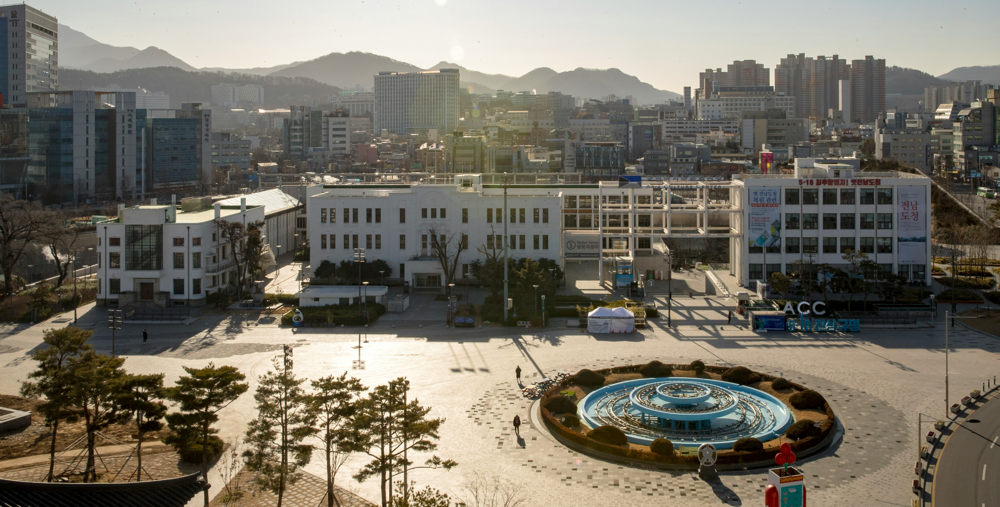
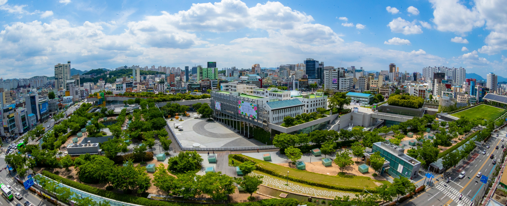

Gwangju Table
달큰하고 든든한
불고기 한 상
푸짐한 인심으로 유명한 광주에서는 잘 구운 고기와 다채로운 반찬을 곁들인 든든한 한 끼를 즐겨보세요.
Gwangju · Korea
도시 곳곳에 스며든 문화와 따뜻한 미식, 여유로운 풍경이 광주만의 여행을 완성합니다.
Landmark Gallery
사진과 영상으로 광주의 여러 표정을 만나보세요.


Local Food
Gwangju Table
푸짐한 인심으로 유명한 광주에서는 잘 구운 고기와 다채로운 반찬을 곁들인 든든한 한 끼를 즐겨보세요.